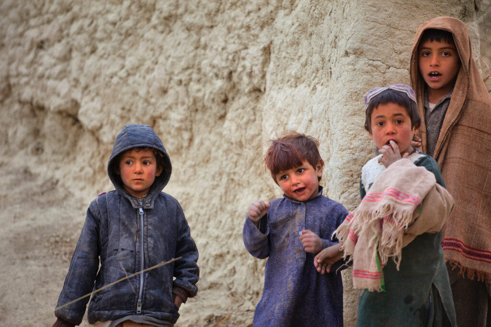

India, a true friend
15 August 2021, the Taliban took over Afghanistan, soon after, all countries were afraid of how a terrorist regime would run a country and if the Taliban will be able to prevent Afghanistan from being used by other terrorist groups to plan and execute attacks on other countries, but while all this happened the world almost left the people of Afghanistan to suffer and die not just at the hands of terrorists but also left them to starve .
Countries that claimed they were working for the people of Afghanistan isolated them, many closed the borders, meetings began to be held in which countries and different organizations began to discuss the future of Afghanistan.

One such country was India , who held and attended different meetings to discuss situation in Afghanistan, India always called the people of Afghanistan its friends and also proved this from time to time, before the Taliban took over Afghanistan, India helped the people by building hospitals, schools , roads , dams and providing aid and after the terrorist take over, India did not step back.

India made it clear that they were going to help the people of Afghanistan , India for once put aside its differences with Pakistan and requested to allow India to send food and medicines to Afghanistan, but wasn’t allowed to do so because for Pakistan their selfish interests were more important than the lives of innocent Afghan people, but this did not stop India from finding different ways. Around 2 tons of life saving drugs were sent on a special charter flight to Afghanistan and along with this India sent lakhs of Covid vaccines too for the people.

After months of being denied the permission to send 50,000 metric tonnes of wheat to the people of Afghanistan through Pakistan, India finally found a way when Iran announced that it would allow India to send aid to the people of Afghanistan.
This is just one small example of how India has always put values above politics and gains.